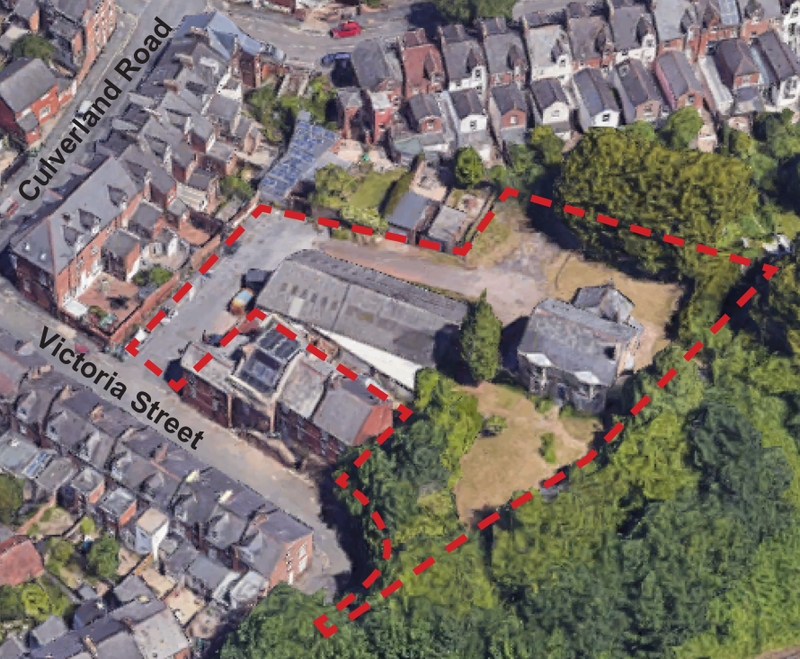
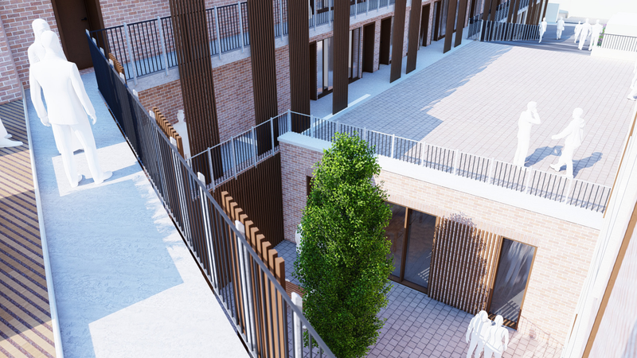
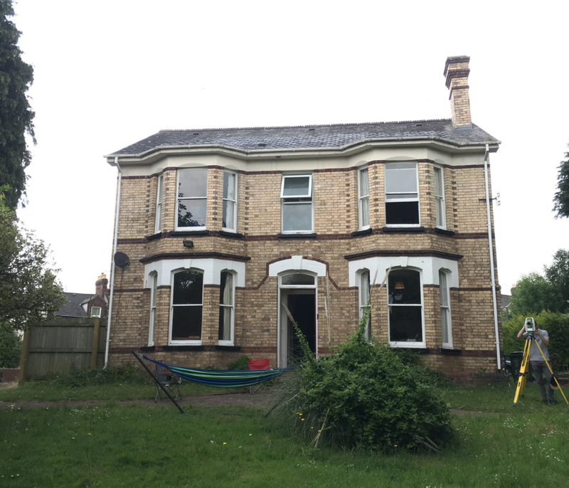

Plans for a development of 101 studio bedspaces in a complex of three, four and five-storey blocks in the heart of St James have been submitted to the city council for approval.
Shopland Gray Developments is seeking full planning permission for a 3,200m2 “co-living” scheme designed by ECE Westworks on a 0.24 hectare (0.59 acre) site in Victoria Street.
The development would entail the demolition of an eight-bedroom Victorian villa and the adjacent Lions Holt vehicle repair garage previously occupied by Vanborn & Radford.
Three interconnected blocks with raised walkways and paved areas would then be constructed on the site of the garage, house and gardens.
 Victoria Street co-living proposal development site
A design and access statement describes the scheme as “low rise, medium density housing” in an “exemplar development which enhances the local neighbourhood and improves the existing aesthetic”.
It adds that the “modesty of a more suitable design” has driven the development process to a “final design conclusion that respects the locality of the area” in the form of an “individualistic proposal with sensitivity to the surrounding context”.
It adds that the development would “positively contribute to the diverse typology of Victoria Street” while “paying homage to the historical vernacular in and around the area”.
Victoria Street co-living proposal illustrative view
93 of the 101 self-contained studio bedspaces in the scheme, each of which would have its own kitchen and bathroom, would provide a total of 20m2 of living space, about the same as a typical single garage. Three units would provide 21m2, four more 25m2 and one unit 26m2.
None would meet national space standards, which require a one-person dwelling to provide at least 37m2 of space (39m2 if it has a bath instead of a shower).
Co-living developments are, however, often allowed to evade these standards by local planning authorities which choose to classify them as sui generis, a planning term for uses which are excluded from use classification by legislation.
The city council follows this approach. It said it would introduce a co-living policy three years ago, following other local authorities which have adopted planning policies to control such developments, but has yet to do so.
 Victoria Street co-living proposal illustrations present a panopticon design
The Victoria Street application is nevertheless keen to classify the development site as “redundant brownfield”, a frame it repeats several times.
It correctly says the repair garage site, over which the central block would be built, requires further investigation to determine the contamination risks it presents.
However it also says that both south and north blocks would be “located on a brownfield area” despite their intended sites on the gardens at the front and rear of Wisteria House.
And it says that the “intention is to maintain much of the existing vegetation along the northern and eastern boundaries” but as the plans make clear this will all be cut down inside the site boundary.
It then cites the outline draft version of the new Exeter local plan in its support, on the basis that such “brownfield site” proposals are precisely the form of development the city council wants to encourage, and says that council officers support co-living development on the site too.
 Wisteria House, to be demolished as part of the Victoria Street co-living proposal development site
An accompanying planning statement says the scheme has been “the subject of extensive consultation prior to it being finalised”.
It also says leaflets intended to inform local residents about the proposals were only “posted to the 50 properties in the immediate vicinity of the site” and that the applicants have only engaged with “key stakeholders” other than city council officers twice in more than two years.
This apparently amounted to meeting ward councillor Martin Pearce in November last year and holding a video call with Exeter St James Community Trust representatives the following month.
In its previous configuration as the St James neighbourhood forum, the trust was responsible for the St James Neighbourhood Plan, which has been in force as part of Exeter’s statutory development plan for more than a decade.
The trust’s emphatic opposition to the proposals is clear. It says they are “completely at odds with the community’s vision for a sustainable community and the overarching aim of the neighbourhood plan to restore community balance through planning decisions that tilt away from the current and worsening dominance by one demographic group”.
The Victoria Street application does acknowledge the St James Neighbourhood Plan, but it simply asserts compliance with the plan’s provisions and doesn’t mention policy C2, which addresses large scale purpose built student accommodation of the type it proposes.
This omission appears to rely on the applicant’s conceit that simply calling the development “co-living” will make it so, even though students would be free to live there and its form is indistinguishable from the purpose built student accommodation to which the policy applies.
The design and access statement also includes three site location maps which seek to show that it is in “an ideal location for the proposed use”.
These identify several nearby points of interest but not the location of the university’s’ campuses despite both being clearly visible on all three.
Victoria Street co-living proposal development site location map with nearby points of interest. Contains satellite imagery © 2022 CNES/Airbus, Getmapping plc, Infoterra Ltd & Bluesky, Maxar Technologies.
A design statement “analysis” also seeks to justify the development proposals by comparing them with “precedent examples of co-living in Exeter”.
Only one of these schemes is being constructed while work has yet to begin on another despite being approved nearly four years ago then revised two years later.
A third has still to be scheduled for determination after falling foul of flood risks.
Even though the first Exeter co-living unit has yet to be let, the Victoria Street application says it would “provide a form of housing for which there is a clear and growing need”, saying that co-living is a “much-needed form of development”.
It also says that two of the three Exeter co-living schemes will be occupied at a rate between 1.65 and 2 residents per room without explaining why its figures for Victoria Street are based on only one resident renting each studio.
“Precedent examples of co-living in Exeter” included in Victoria Street co-living proposal
While there is no evidence of demand for co-living in Exeter, there is substantial evidence of demand for student accommodation. Students based at the university’s Exeter campuses amounted to nearly 30% of the city’s population in 2021-22.
The only Exeter co-living scheme that is actually being built is located opposite the university’s St Luke’s campus, with room rates that are expected to be well out of reach of local workers.
We will not know whether its tenants are all students until construction is complete, but few expect any not to be. Public comments on the Victoria Street proposals show that residents anticipate the same outcome in St James.
Robert Blakey says the development is “clearly intended as (even more) student accommodation” and adds that the site should instead “obviously be used to provide decent smaller-scale social housing”.
Linda Jessep describes the development as “yet more student housing by stealth”, a theme reflected in several responses, while Caroline Lee is also unconvinced, saying: “I do not like being lied to by property developers. Throw this out – it is an absolute sham.”
Joseph Fitzpatrick says: “Yet another detrimental planning application with no regard for the local community or the hard work put in to rebuild the sense of community stripped away by historic planning errors.”.
Annemarie MacDonald adds: “St James is already under strain and this will only put more pressure on the ward.”
As the St James Community Trust points out, Exeter should expect many more student accommodation blocks masquerading as co-living developments like the Victoria Street proposals.
The new Community Infrastructure Levy charges being introduced by the city council are designed to encourage this form of development whether they end up occupied by students or not.
Exeter City Council is inviting comments on the Victoria Street co-living development plans until 17 September.


{kind=link}
{kind=link}